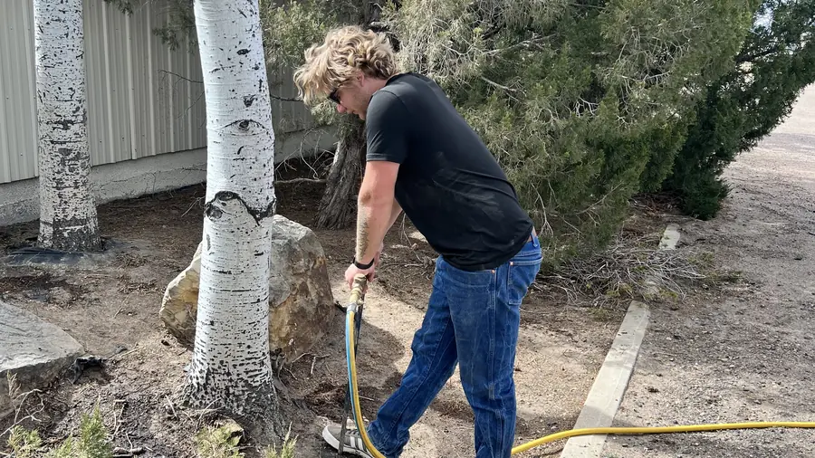

Full-Zone Root Nourishment™
Deep Root Tree Fertilization for Colorado Trees

Colorado's dry climate, challenging soil conditions, and unpredictable weather can make it difficult for trees to thrive. American Tree Colorado's Full-Zone Root Nourishment™ service delivers essential nutrients throughout the root zone to support stronger roots, healthier foliage, and long-term tree vitality.
Our seasonal deep root fertilization program supports trees during spring growth, summer heat and drought stress, and fall root development. By improving nutrient availability and supporting healthy soil conditions, we help trees maintain their natural resilience against environmental stress.
Seasonal Root Nourishment
Tree root activity and nutrient requirements shift throughout the Colorado year. We tailor root nourishment to local soil conditions and growth cycles:
- Spring Root Nourishment (January–April): Supports root activity and prepares trees for the growing season by addressing nutrient needs as soil conditions become favorable.
- Summer Root Nourishment (May–August): Helps maintain tree vitality during Colorado's hot, dry months by supporting nutrient availability and healthy root function.
- Fall & Dormant Root Nourishment (September–December): Supports root health and nutrient reserves as trees transition into winter dormancy.
When Fertilization Helps
Front Range soils are alkaline, low in organic matter, and often compacted. Deep root fertilization may help when a tree has a confirmed nutrient deficiency or grows in depleted soil. Iron chlorosis in oaks and maples, which shows up as yellowing leaves with dark green veins, is a special regional case: it usually comes from alkaline soil locking up micronutrients, overwatering, or compaction, and standard fertilizer does not fix it. We assess the site first so you only treat what the tree actually needs.
What Fertilizer Will Not Fix
Yellow leaves, poor leaf canopy, and slow growth can have many causes, and fertilizer is not a universal cure. To protect your trees and save money, we never recommend fertilizer for issues it cannot fix:
- Drought or watering problems: Dry roots cannot take up nutrients. Winter watering is inexpensive and often comes before feeding.
- Root damage, compaction, or poor planting: Severed roots, saturated drainage, or trees planted too deep require physical root-zone care, not fertilizer.
- Insect infestations: Fertilizer does not eliminate insects or tree borers; active pests require targeted Plant Health Care.
- Freeze protection: Treatments do not prevent freeze injury or guarantee drought resistance.
Newly planted trees also need time to establish; excess nitrogen can push canopy growth before roots are ready. If water, compaction, or planting depth is the real problem, we will tell you that honestly and save you the cost of feeding a tree that is not hungry.
How We Approach It
- Find the cause first: We inspect moisture, rooting volume, planting depth, compaction, pests, and signs of disease before recommending treatment.
- Confirm the need: Soil observations and tree symptoms should point to a real deficiency rather than routine chemical application.
- Targeted subsurface delivery: Professional-grade hydraulic injectors distribute balanced nutrients throughout the root zone where feeder roots can absorb them.
- Protect the site: We avoid frozen ground and never apply where fertilizer could wash into storm drains, waterways, or hardscapes.
Winter Watering Often Comes First
On the Front Range, dry winters can leave roots without moisture for weeks. Winter watering is inexpensive and often does more than fertilizer. Our article on when Colorado trees actually need fertilizer and our plant health care page have more detail.
Schedule a Tree Health Assessment
Give your trees the nourishment they need to thrive. If a tree is showing signs of stress or you want to evaluate its nutrient needs, contact American Tree Colorado to schedule a professional tree health assessment.
Phone: (303) 456-6898
Email: mandi@americantreecolorado.com
Address: Golden, Colorado 80401 USA